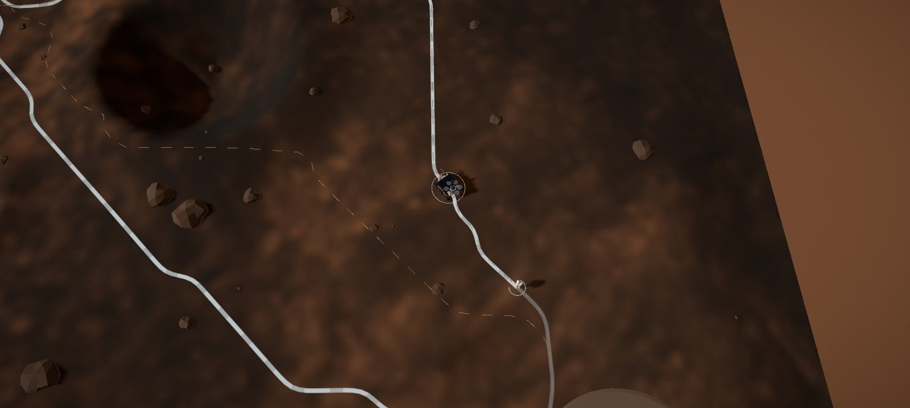
ARES-TWIN es un gemelo digital de una salida extravehicular (EVA) en Marte. Muestra cómo un rover podría acompañar a un astronauta, decidir por dónde caminar y qué estudiar, y responder cuando algo sale mal, siempre cuidando el oxígeno.
Se ejecuta completo en el navegador. Responde cuatro preguntas del reto:
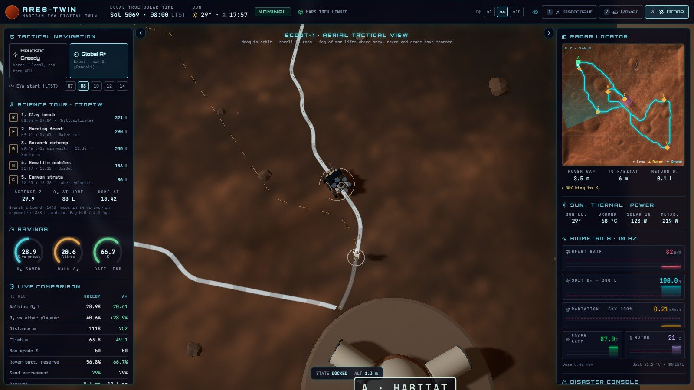
Un astronauta sale del hábitat (A) para un recorrido geológico por la ladera de Mount Sharp y debe volver a él. El rover AresCompanion va 15 m por delante y lleva un dron en su plataforma.
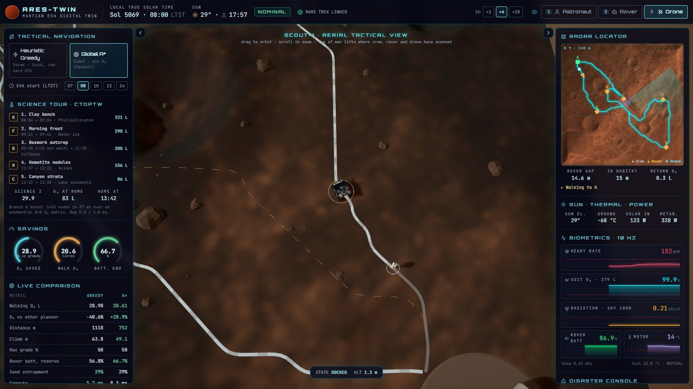
| Sitio | Mineral | Valor S | Masa | Perforación | Ventana (LTST) | Nota |
|---|---|---|---|---|---|---|
| B Afloramiento boxwork | Sulfatos | 10 | 1,2 kg | 90 min | 10:00–16:30 | Necesita el Sol alto para fotografiar |
| C Estratos del cañón | Sedimentos lacustres | 8 | 1,0 kg | 75 min | 09:00–17:00 | Sin mapear hasta que pasa el dron |
| F Escarcha matinal | Hielo de agua | 7 | 0,3 kg | 30 min | 07:00–09:30 | Se sublima cuando sube el Sol |
| K Banco de arcillas | Filosilicatos | 6 | 1,0 kg | 60 min | 08:00–17:00 | |
| Y Vetas de yeso | Sulfatos | 5 | 0,8 kg | 50 min | 08:00–17:00 | Repite el mineral de B |
| D Dunas activas | Arena basáltica | 4 | 0,6 kg | 30 min | 08:00–17:00 | Caminata lenta |
| H Nódulos de hematita | Óxidos | 4 | 0,5 kg | 45 min | 08:00–17:00 |
La bolsa admite 4 kg y el tanque lleva 380 L de O₂. Con salida a las 08:00 en Gale, el solucionador elige K → F → B → H → C y planifica volver a las 13:42 con 83 L de O₂ (22 %). Deja fuera las vetas de yeso y las dunas: no caben en la bolsa y valen menos. En la corrida completa de prueba, sin eventos, la tripulación llegó a las 13:37 con 86 L y 4,0 kg de muestras.
| Estado | Cuándo ocurre | Cómo termina |
|---|---|---|
| NOMINAL | Tour en curso. | Al volver al hábitat, o ante un evento o una regla de aborto. |
| ABORT | Se cruzó el punto de no retorno, no se llegaría antes del atardecer o no queda ningún sitio posible. | Al llegar al hábitat. |
| SHELTER | Tormenta solar: se camina al refugio de menor dosis. | Al pasar la tormenta se recalcula el tour con lo que queda. |
| RESCUE | El astronauta se desvanece: el rover acude y conecta el umbilical. | Tras 12 minutos de estabilización pasa a MEDEVAC. |
| MEDEVAC | El rover escolta al astronauta, más lento y a 8 m, hasta el hábitat. | Al llegar al hábitat. |
| COMPLETE | La tripulación está en el hábitat. | Con RESET EVA. |
El movimiento ocurre en tiempo real multiplicado por la velocidad elegida (×1, ×4 o ×10). Cuando todos están quietos (perforando, esperando una ventana, en el refugio o estabilizando al astronauta), el reloj se acelera ×60 para no esperar horas. Así, una EVA de casi seis horas marcianas se ve en pocos minutos sin que nadie se teletransporte.
Estos son los diez cálculos que el equipo definió como los más adecuados para el rover. Cada uno indica qué entra, qué sale, la fórmula y cómo quedó en el simulador.
Estado: Implementado funciona en el simulador tal como está descrito · Parcial funciona con una simplificación · Propuesto todavía no está en el código.
En el simulador: el relieve sale de HiRISE y MOLA (Mars Trek). No hay datos THEMIS ni CRISM: el factor de terreno se aproxima con la arena del modelo y los siete sitios son de escenario, con valores elegidos por el equipo.
En el simulador: se calcula para las 8 aristas de cada celda. Un paso con |G| > 45 % no se permite, y una celda con más de 30° de pendiente máxima no tiene apoyo: por eso las laderas de 25° se suben en zigzag.
En el simulador: v0 = 1,2 m/s y η = 1 + 0,9·arena. En plano cuesta 1,3 L cada 100 m; subiendo al 20 %, 4,9 L, y bajando al 20 %, 1,9 L. Para decidir, el peso se multiplica por factores de riesgo (sin mapear ×7, zona fría ×4, Sol bajo de frente ×1,25, sombra ×1,08). La telemetría descuenta el O₂ de Pandolf sin esos factores.
En el simulador: un Dijkstra por sitio da una fila entera de D. Los tramos que se caminan se trazan con A* y la heurística octil por wmín, el costo por metro más barato del mapa, que nunca sobreestima. La octil es más ajustada que la euclidiana del documento y sigue siendo admisible. Cada tramo se suaviza con Chaikin.
En el simulador: R(p) se recalcula con cada cambio del mapa y se revisa cada segundo de misión. Si se viola, se cancela la ciencia y se toma la ruta de menor O₂ al hábitat. Se agregó la condición de luz.
En el simulador: un solo equipo (astronauta + rover). La restricción de radio UHF se cumple siempre, porque el rover va a 15 m. Se agregó un desempate de 0,01 por litro para preferir, entre tours de igual valor, el que gasta menos O₂.
En el simulador: B y Y son sulfatos, así que tomar ambos rinde menos que diversificar. ψ es submodular y monótona (Nemhauser, Wolsey y Fisher, 1978).
dfs(ruta, O₂, kg, t, Z):
for j in no_visitados:
si O₂ − D[i][j] − espera − τ_j·300W·κ < (1+ρ)·R(j): podar // aborto
si llegada > l_j: podar // ventana
si kg + q_j > 4: podar // bolsa
si salida + T_vuelta(j) > atardecer − 30 min: podar // luz
si Z + Σ S_restantes ≤ mejor Z: podar // cota
dfs(ruta + [j], …)
En el simulador: con 7 sitios explora unos 1.500 nodos en 30 a 80 ms y da el óptimo exacto. No hacen falta heurísticas de respaldo con este N.
En el simulador: recalcula todo con A* y Dijkstra desde cero, sin D* Lite (con este mapa tarda milisegundos). Ante una tormenta no va siempre al hábitat: compara el hábitat con paredes de cráter y el cañón, con el rover de escudo, integrando la dosis del perfil de la tormenta; al terminar, retoma el tour si todavía alcanza. Las sombras se actualizan cada 10 minutos marcianos.
En el simulador: no está implementado. La posición del astronauta se conoce sin error. Al tener ya el campo R(p), agregarlo sería barato: cada partícula es una consulta a ese campo.
La misión toma la fecha real del día en que se ejecuta y la hora solar local elegida para la salida. Con el algoritmo Mars24 se obtienen la estación y la posición del Sol en el sitio, y eso cambia el mapa, la energía y las decisiones.
| Efecto | Cómo se calcula | Consecuencia |
|---|---|---|
| Luz y sombras de la escena | La luz direccional sigue el vector solar; el cielo pasa de ocre a un halo azul al amanecer y al atardecer. | Sombras largas a primera y última hora. |
| Celdas en sombra | Se lanza un rayo desde cada celda hacia el Sol sobre el relieve. | Costo ×1,08, suelo hasta 18 °C más frío y sin carga solar. |
| Encandilamiento | Con el Sol a menos de 15°, los pasos que van hacia él (±25°) cuestan ×1,25. | A primera y última hora, la ruta evita caminar de frente al Sol. |
| Temperatura del suelo | Modelo diurno con 1,5 h de retraso térmico: unos −85 °C al amanecer, cerca de 0 °C a la tarde. | Riesgo de congelamiento de motores y gasto de calefactores. |
| Energía del rover | Irradiancia con atenuación por polvo (τ = 0,6) sobre un panel de 3,2 m² al 28 %. | Al mediodía el panel cubre buena parte del consumo; en sombra, no. |
| Ventanas y atardecer | Cada sitio tiene su ventana; hay que volver 30 min antes de la puesta. | La escarcha sólo se toma temprano; el boxwork, con el Sol alto. |
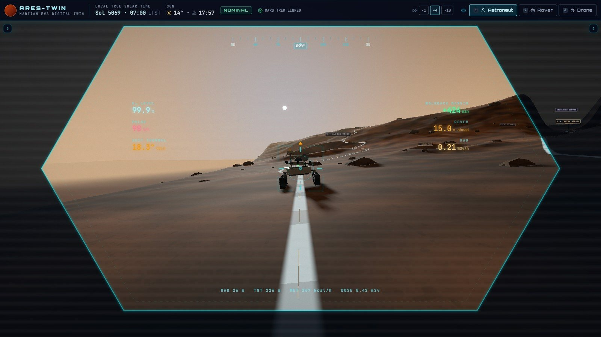
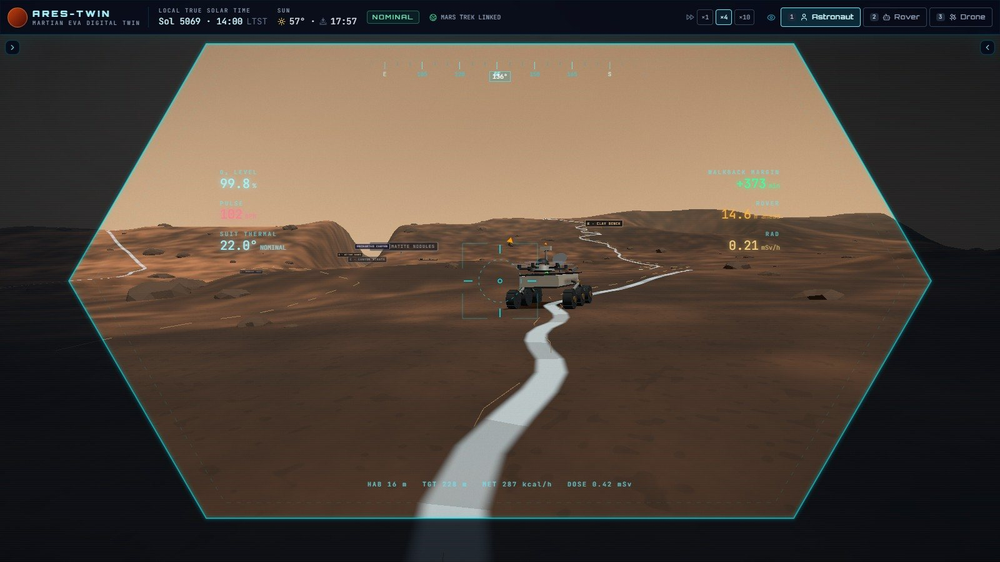
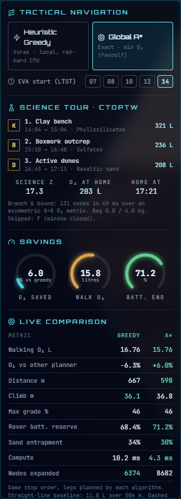
Con salida a las 08:00 entran cinco sitios. Saliendo a las 14:00 el tour se reduce a K → B → D, de vuelta a las 17:21: sólo queda tiempo para lo que pueda terminarse antes de las 17:27 (atardecer menos 30 min); la escarcha ya se sublimó y su ventana está cerrada, y el solucionador la informa como «window closed».
El selector EVA start del panel izquierdo permite comparar 07, 08, 10, 12 y 14 h sobre el mismo terreno.
El simulador compara siempre dos planificadores sobre el mismo orden de paradas: A*, que garantiza el mínimo, y un voraz local que imita a un procesador modesto.
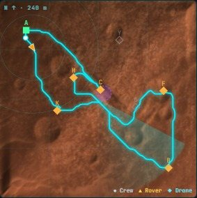
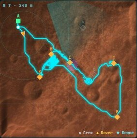
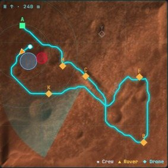
| Métrica | A* | Voraz |
|---|---|---|
| O₂ al caminar (Pandolf) | 20,6 L | 29,0 L |
| Distancia | 752 m | 1.118 m |
| Desnivel subido | 49 m | 64 m |
| Batería del rover al final (estimada) | 66,7 % | 56,8 % |
| Ahorro de O₂ de A* frente al voraz | 29 % | |
La loma atraviesa todo el sitio: no hay forma de rodearla. Sus laderas tienen entre 25° y 30°, así que se puede cruzar, pero sólo en zigzag, porque un paso recto superaría el 45 %.
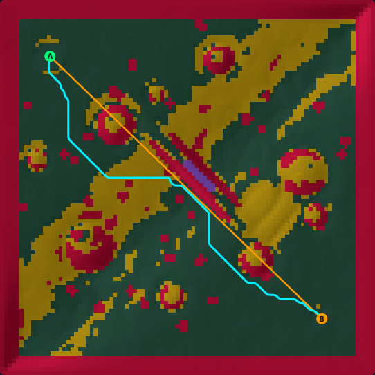
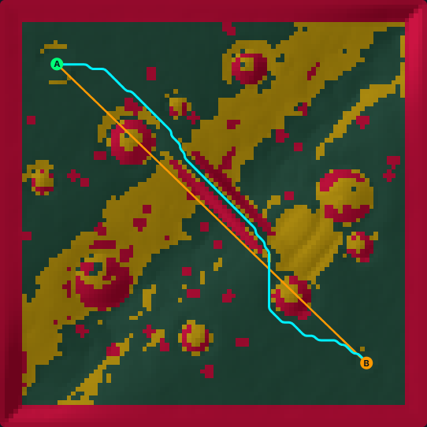
| Tramo A → B en Gale | Distancia | O₂ | Desnivel | Pendiente máx. de paso |
|---|---|---|---|---|
| Sobre la loma (cañón sin mapear) | 277 m | 9,62 L | 32 m | 37 % |
| Por el cañón (tras el escaneo) | 266 m | 8,24 L | 27 m | 22 % |
| Línea recta (referencia) | 242 m | 14,48 L | 42 m | 67 % (no transitable) |
Se activan desde el panel derecho y muestran cómo reacciona el sistema sin intervención humana.
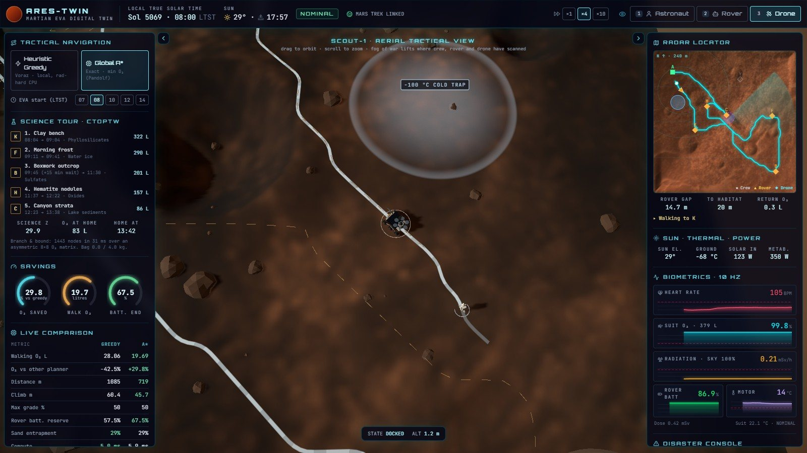
Aparece a unos 24 m por delante una trampa fría de −100 °C y 12 m de radio.
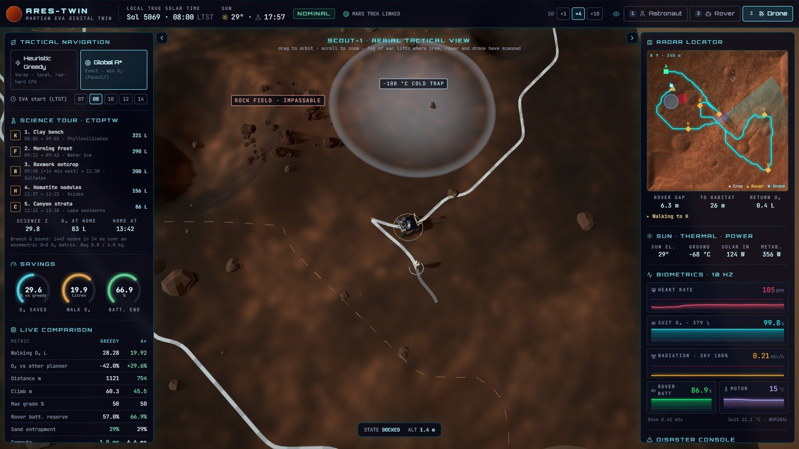
Surgen 46 rocas y arena suelta en 7,5 m de radio, a unos 20 m por delante.
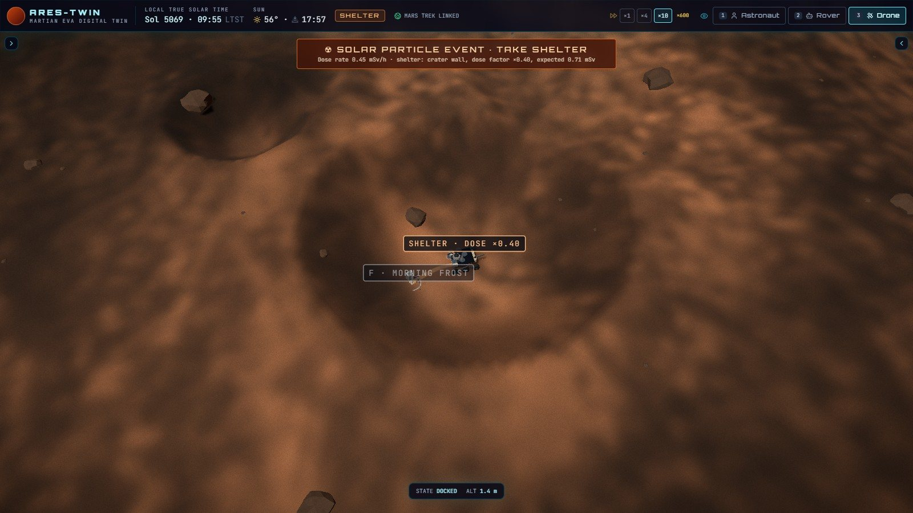
El flujo tiene un pico de 7,5 mSv/h a cielo abierto y decae en unos 40 minutos marcianos.
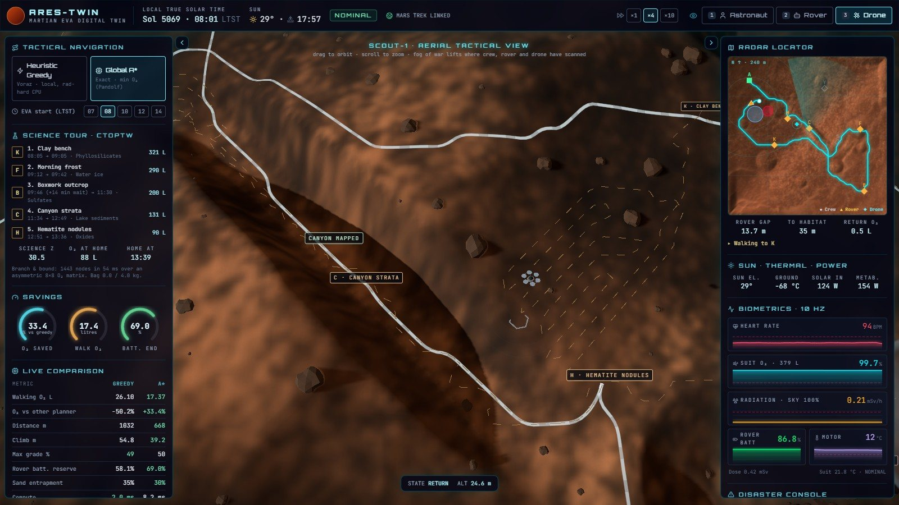
El dron despega de la plataforma del rover, vuela al cañón y lo escanea durante 5,5 s.
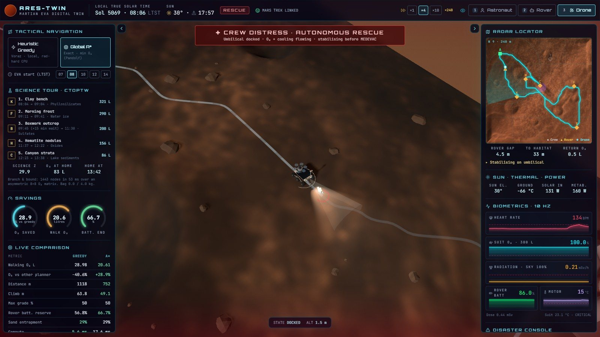
El astronauta se desvanece: más de 165 latidos por minuto y consumo de O₂ alto.
Tres cámaras (teclas 1, 2 y 3), dos paneles que se pueden ocultar y una barra superior con la hora solar local, el Sol y la velocidad de simulación. La escena usa luz solar real, cielo según la hora y materiales sobrios.
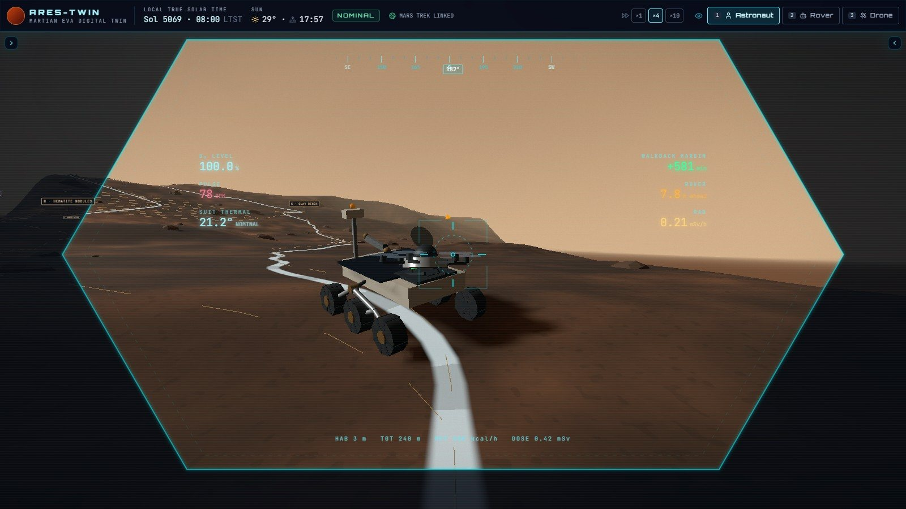
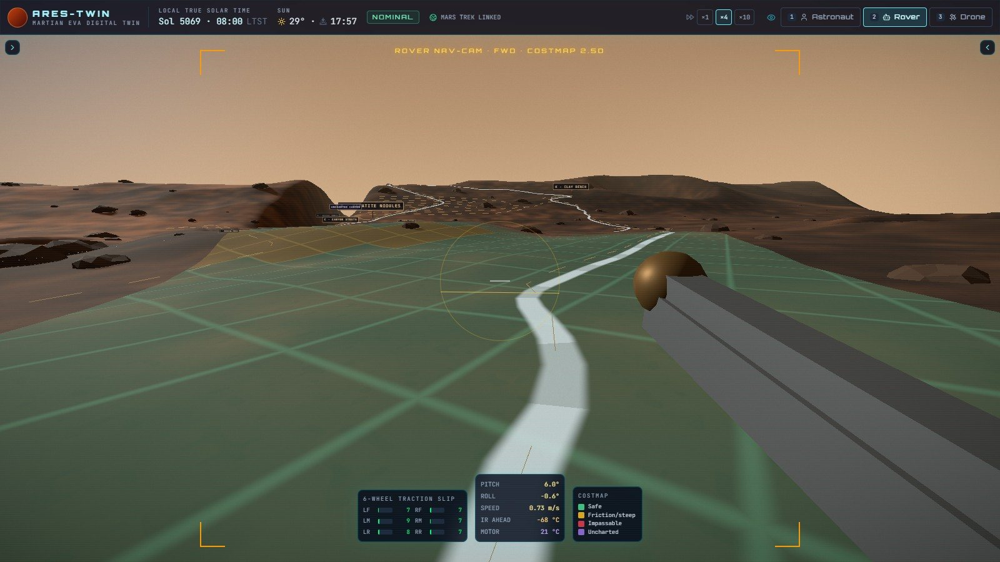
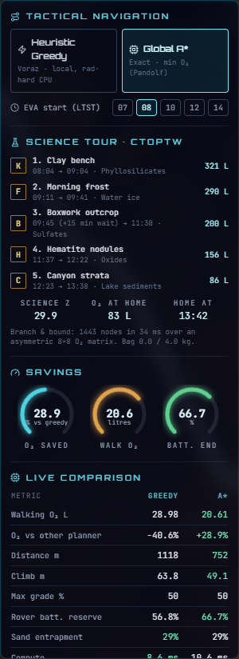
| Bloque | Qué muestra |
|---|---|
| Tactical navigation | A* o voraz para los tramos, y hora de salida de la EVA. |
| Science tour · CTOPTW | Paradas en orden con llegada, espera, salida y O₂ restante; valor Z, O₂ al volver y hora de regreso; sitios descartados y por qué. |
| Savings | Ahorro de O₂ frente al otro planificador, O₂ al caminar y batería al final. |
| Live comparison | Los dos planificadores lado a lado: litros, distancia, desnivel, pendiente, batería, cómputo y nodos. |
| Point of no return | O₂ del tanque frente a (1 + ρ)·R(p) y el O₂ previsto al volver. |
| Mars data source | Región, posición de Curiosity, pendiente regional y capas usadas. |
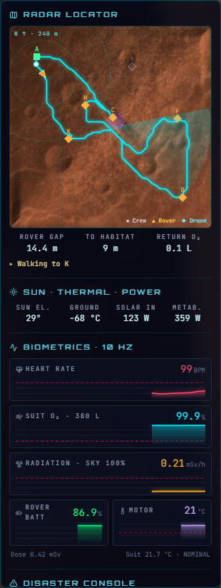
| Bloque | Qué muestra |
|---|---|
| Radar locator | Imagen HiRISE del sitio, ruta, sitios (en ámbar los planificados, en verde los hechos), refugio y posiciones. Debajo: distancia al rover y al hábitat, O₂ para volver y actividad actual. |
| Sun · thermal · power | Elevación del Sol, temperatura del suelo, potencia del panel y potencia metabólica. |
| Biometrics | Pulso, O₂ (en % y litros), radiación con el porcentaje de cielo visible, batería y motor. |
| Disaster console | Los cinco eventos y RESET EVA. |
| Event log | Cada decisión con su hora solar local. |
Los valores se recalculan 10 veces por segundo. El O₂ sale de los mismos litros de Pandolf que usa el planificador, así que lo que se planifica y lo que se consume coinciden.
| Variable | De qué depende | Alerta o regla |
|---|---|---|
| O₂ del traje (L y %) | Tanque de 380 L. Se descuenta la potencia del momento: Pandolf al caminar, 121 W parado, 300 W perforando, 430 W desvanecido. Con el umbilical, el rover lo recarga. | Aborto si O₂ < (1 + 0,15)·R(p). En rojo bajo el 25 %. |
| O₂ para volver R(p) | Dijkstra inverso desde el hábitat. | Margen en minutos al ritmo actual. |
| Pulso | Potencia metabólica y tormenta; ~172 desvanecido, baja con el umbilical. | En rojo sobre 150. |
| Radiación | 0,21 mSv/h de fondo; en tormenta, el perfil de pico y decaimiento por el factor del lugar (cielo visible, × 0,45 con el rover de escudo, 0,08 en el hábitat). | En rojo sobre 1 mSv/h. |
| Sol y suelo | Mars24, elevación y modelo diurno; sombra hasta −18 °C. | Hay que volver antes del atardecer − 30 min. |
| Batería del rover | Potencia del panel (3,2 m², 28 %) menos marcha, calefactores, focos y dron. | Reserva prevista al final del tour. |
| Motor e infrarrojo adelante | Temperatura del suelo y actividad del rover. | Congelamiento bajo −25 °C en el motor o −85 °C adelante. |
| Deslizamiento de ruedas | Arena, pendiente y velocidad. Sólo se muestra. | Amarillo sobre 20 %, rojo sobre 45 %. |
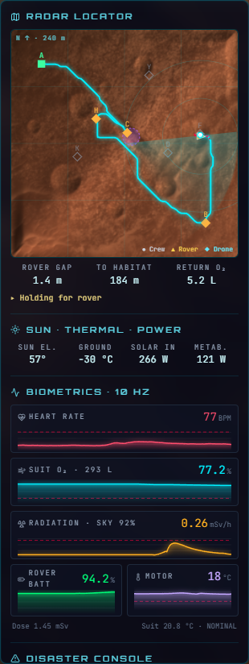
En la versión 1, las previsiones del panel resultaban optimistas: el consumo corría acelerado y la previsión no. Ahora el planificador, la regla de aborto y el tablero usan los mismos litros y el mismo reloj. En la corrida de prueba, el tour planificó volver con 83 L a las 13:42 y llegó con 86 L a las 13:37.
La radiación muestra el porcentaje de cielo visible: en la pared de un cráter, con el rover al lado, la tasa baja a menos de la mitad aunque la tormenta siga.
El sitio de Gale está a escala real y centrado en la última posición publicada de Curiosity (sol 5069): −4,8253°, 137,3889°, a 3.479 m bajo el nivel de referencia, en la ladera de Mount Sharp.
| Capa (NASA Mars Trek) | Resolución | Uso |
|---|---|---|
| curiosity_hirise_mosaic | 0,64 m/px (zoom 16) | Superficie del sitio de 240 m: textura del terreno y radar. |
| Gale_DEM_SMG_1m | DEM HiRISE, servido en 8 bits | Plano regional ajustado en 1,2 km alrededor del sitio. |
| Mars_MGS_MOLA_DEM_mosaic_global_463m_8 | 463 m/px | Relieve análogo de Jezero y Meridiani. |
| Mars_Viking_MDIM21_ClrMosaic_global_232m | 232 m/px | Color análogo de Jezero y Meridiani. |
Mars Trek sirve el DEM de Gale como imagen de 8 bits, sin metros. Se cruzaron 174 puntos del recorrido de Curiosity (con su altura medida) con el nivel de gris del mosaico y se ajustó una recta:
Con esa calibración se ajusta un plano en una ventana de 1,2 km: la ladera sube unos 9° hacia el sur-sureste, hacia la cumbre de Mount Sharp. El simulador la limita a 6,8° para que el sitio siga siendo caminable, y sobre ella agrega la loma, el cañón, los cráteres y las rocas del escenario.
La posición viva de Curiosity está disponible en el servicio MMGIS de la NASA, pero bloquea las peticiones desde el navegador (CORS). Por eso la posición quedó fija en el código con la fecha de consulta.
Aplicación web de una sola página, sin servidor propio ni base de datos. Todo el cálculo ocurre en el navegador.
| Tecnología | Uso |
|---|---|
| React 18 y TypeScript 5.6 | Interfaz y lógica. |
| Three.js, React Three Fiber y Drei | Escena 3D, cámaras, sombras y modelos. |
| Postprocessing | Resplandor leve, grano de sensor (sube con la radiación) y viñeta. |
| Zustand · Tailwind CSS · Vite 5 | Estado, estilos y empaquetado. |
| NASA Mars Trek (WMTS) | Mosaicos de imagen y elevación. |
src/lib/ energy.ts Pandolf a 0,38 g: velocidad, watts y litros de O₂ costmap.ts Grafo dirigido 96 × 96: aristas en litros, riesgo, sombras pathfinding.ts A*, voraz, Dijkstra directo e inverso, Chaikin tour.ts CTOPTW: matriz D, ramificación y poda, ψ sites.ts Sitios científicos, factor de visión del cielo, refugios marsTime.ts Mars24, Sol, irradiancia, temperatura del suelo marsTrek.ts Mars Trek: HiRISE, DEM calibrado, MOLA, Viking terrain.ts Relieve, loma de Mount Sharp, cañón, cráteres, rocas metrics.ts Evaluación de rutas (O₂, Wh, riesgo) src/store/ simEngine.ts Motor: tour, reloj, reglas de aborto, eventos, refugio, rescate src/hooks/ Telemetría a 10 Hz, carga de Mars Trek, teclado src/components/ Escena 3D y paneles src/explicacion/ Página matemática interactiva → explicacion.html docs/documentacion/ Fuente de este PDF
Listado de los cálculos. El desarrollo, los ejemplos interactivos y el origen de cada uno están en explicacion.html.
| Fórmula o método | Para qué se usa | Tipo |
|---|---|---|
| Diferencia central | Pendiente máxima de cada celda | Método numérico |
| Pendiente con signo G | Subida o bajada de cada paso | Definición |
| Ecuación de Pandolf a 0,38 g | Litros de O₂ de cada paso | Modelo empírico |
| Factores de riesgo y límites | Evitar lo peligroso o imposible | Diseño propio |
| Grafo dirigido de 8 vecinas | Representar el mapa | Definición |
| A* con heurística octil · wmín | Tramo de menor O₂ | Algoritmo con teorema |
| Búsqueda voraz | Planificador local de comparación | Algoritmo |
| Dijkstra (directo e inverso) | Matriz D y campo de retorno R(p) | Algoritmo con teorema |
| Regla de no retorno | Decidir si seguir o volver | Diseño del equipo |
| CTOPTW | Elegir sitios y orden | Definición |
| Ramificación y poda | Resolver el tour exacto | Algoritmo con teorema |
| Diversidad ψ | Premiar minerales distintos | Modelo |
| Mars24 | Estación y hora solar local | Algoritmo |
| Elevación solar e irradiancia | Luz, sombras, panel solar | Modelo |
| Temperatura del suelo | Frío, motores y traje | Diseño propio |
| Factor de visión del cielo | Dosis en tormenta y refugio | Definición |
| Suavizado de Chaikin | Curva caminable | Algoritmo con teorema |
| Control de distancia y modelo de uniciclo | Los 15 m y el tránsito del rover | Modelo de control |
| Calibración lineal del DEM | Pasar el gris del mosaico a metros | Método numérico |
| Tema | Situación actual |
|---|---|
| Pandolf en Marte | La adaptación a 0,38 g con carga efectiva no está validada para un traje en gravedad reducida. Hay que contrastarla con estudios de locomoción antes de presentarla como validada. |
| Datos de terreno | No se usan THEMIS ni CRISM; el factor de terreno sale de la arena del modelo y los sitios son de escenario. |
| Relieve | En Gale, imagen y pendiente regional reales; la loma, el cañón y los cráteres son de escenario. Jezero y Meridiani, en modo análogo. |
| Incertidumbre de posición | El paso 10 del flujo (aborto por percentil con partículas) no está implementado. |
| Replanificación | Desde cero, sin D* Lite. Rápido en este mapa, pero no escala a mapas grandes. |
| Suavizado | La curva final no se revalida contra el grafo; puede marcar pasos de hasta ~50 % en tramos de pocos metros. |
| Radiación | La dosis escala con el cielo visible y un escudo fijo del rover (0,45); el perfil de la tormenta es ilustrativo. No modela espectro ni blindaje del suelo. |
| Física del rover | Sin suspensión ni tracción reales; el deslizamiento sólo se muestra. |
| Posición de Curiosity | Fija (sol 5069): el servicio vivo bloquea peticiones del navegador. |
| Pruebas | No hay batería de pruebas automáticas; se probó manualmente cada evento y una misión completa. |
Se necesita Node.js y un navegador con WebGL. Hace falta internet para Mars Trek; sin conexión se usa el terreno procedural.
npm install # dependencias npm run dev # http://localhost:5173 npm run build # verificación de tipos + versión final en dist/ npm run documentacion # regenera este PDF (requiere Google Chrome)
| Teclas 1, 2 y 3 | Cámara del astronauta, del rover o del dron. |
| ×1 · ×4 · ×10 | Velocidad de simulación (la barra muestra la aceleración ×60 cuando todos están quietos). |
| EVA start | Hora solar local de salida: 07, 08, 10, 12 o 14. |
| Arrastrar y rueda | Girar y acercar la vista del dron. |
| RESET EVA | Reiniciar la misión. |